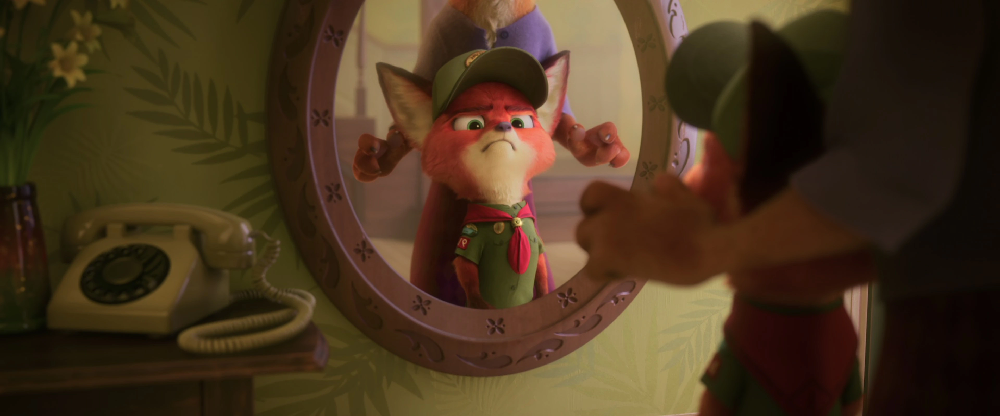

Officer Nicholas Piberius "Nick" Wilde[7] is a male red fox and the deuteragonist of Zootopia.

Nick Wilde is a charming, small-time, con artist fox with a big mouth and a lot of opinions. But when a rabbit cop outsmarts him, he finds himself actually helping her solve a mystery.[8]
Nick came from a poor background living with his mother, Mrs. Wilde (his father is never mentioned or seen, except in the original version of the film). As a child, Nick had a dream to join the local Junior Ranger Scouts, as he always wanted to be part of a pack. When he was 8 or 9 years old, his mother scraped up enough money to buy a brand new scout uniform, giving him the opportunity to join a local troop.
Though he was the only predator and only fox in the local troop, Nick believed that would not matter and attended his initiation with confidence and enthusiasm. Unfortunately, his "initiation" turned out to be a cruel hazing prank where young Nick was ridiculed, knocked to the ground and held down while being muzzled by the other scouts for being a fox (as foxes are considered untrustworthy). After running outside to escape his tormentors, and having his desire of fitting in crushed, Nick tore off the muzzle and broke down in tears.
As a result of this treatment, Nick vowed to never let them see that they got to him and, from that moment forward, hides himself behind a mask of sly confidence. In addition, he declared that if the world viewed foxes as nothing more than sly, vile and untrustworthy scoundrels, he should not only accept it, but embrace it, subsequently doing so by becoming a successful con artist.
This unjust treatment continued well throughout his lifetime, apparent during his adulthood shown in the film, which would only heighten Nick's cynicism. Some of these instances include Nick's interaction with the prejudiced Jerry Jumbeaux, Jr., who specifically states that he has the right to refuse service to anyone, and abuses this power against Nick, openly due to the former's distrust towards foxes. Chief Bogo also displayed this behavior when Officer Judy Hopps, at one point, called Nick forth as a key witness for her case; Bogo unabashedly scoffed at the idea of a fox being trustworthy enough to have its voice heard, thus refusing to listen to his testimony.
At some point while operating as a con artist, Nick fell in with Mr. Big, a feared arctic shrew crime boss. Mr. Big took a liking to the fox, welcoming him into his home and even introducing him to his grandmother, who made him a cannoli. At some point, Nick was involved with selling him a very expensive wool rug that turned out to be made from the fur of a skunk's butt. Feeling disrespected, Nick was turned away and was told to never show his face around Mr. Big ever again.
By the start of the film, Nick appears to be well-off, claiming to have made $200 on a daily basis since the age of twelve (though the accuracy of these claims is questionable). He often works and splits the day's earnings with his quick-tempered partner and fellow fox, Finnick.
In Disney Zootopia: Friends to the Rescue, young Nick is described as sweet, friendly, and mischievous, and is noted to have a natural ability to make others smile and laugh, by replacing the magician, who called in sick, for his childhood friend, Hedy's birthday.
Nick is a fox with a slim build. He's covered in red fur with a cream underbelly up to his muzzle. He has dark auburn fur on his feet, his hands, the tips of his ears, and at the tip of his tail, as well as cream fur inside his ears. He has green eyes and a dark purple nose.
Nick's wardrobe consists of a light green Hawaiian shirt, a dark indigo necktie with red and blue stripes, and a pair of grayish-tan pants. He also has a yellow variant of his Hawaiian shirt. While helping Judy during her investigation, he wears a junior ZPD badge sticker over the pocket of his shirt, originally a gift from Judy for Finnick before the latter humorously passed it onto Nick. The sticker is removed after Judy's press conference when Nick feels hurt by her.
After Nick graduated into a police officer, his fox-size uniform is navy blue with sleeves, a peaked cap, a high collar and pants with a gold aiguillette, and the ZPD insignia on his shoulders, along with having a black tie and a utility belt filled with various paraphernalia. He's also shown wearing police sunglasses.
In Zootopia 2, his green Hawaiian shirt is swapped out for a pink variant. He also wears white trousers and a dark teal tie with cyan leaves and white, red, and purple flowers and night howlers. His police badge is attached to his belt.